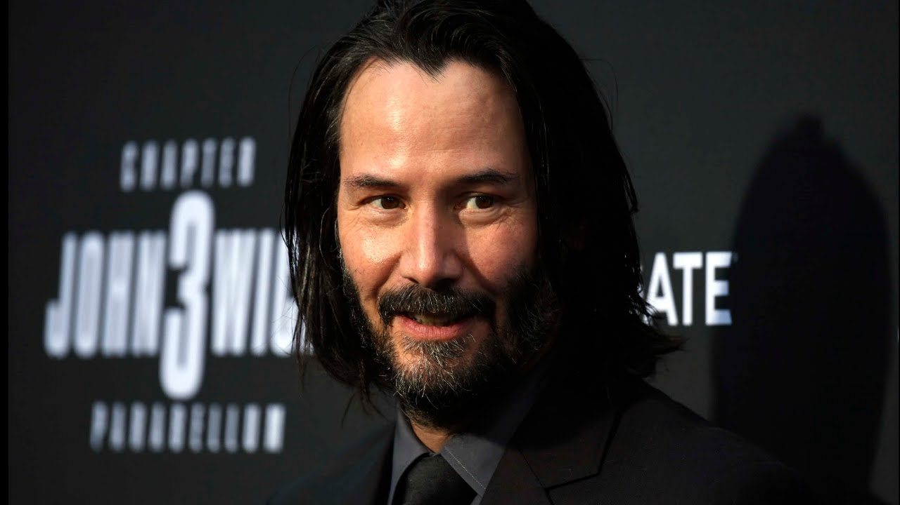

Киану Ривз (02.09.1964) - один из самых неординарных актеров современного Голливуда. Безусловно, в первую очередь он запомнился зрителям как Нео из трилогии «Матрица». Но в его насыщенной фильмографии есть также множество других ролей: как в кассовых, так и в независимых проектах.
Известные фильмы Киану Ривза
| Фильм | Год выпуска |
|---|---|
| Скорость | 1994 |
| Адвокат дьявола | 1997 |
| Матрица | 1999 |
| 47 ронинов | 2013 |
| Джон Уик | 2014 |